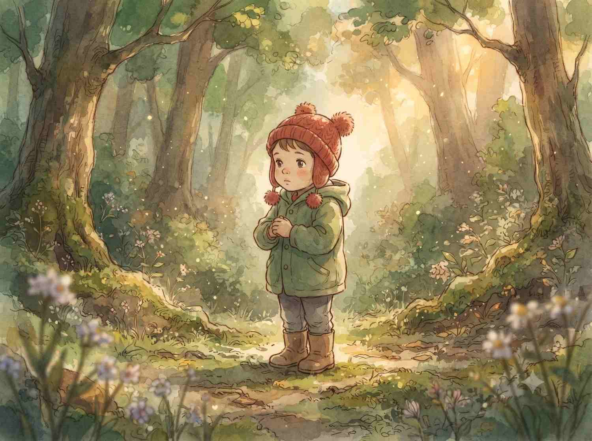

Illustration prompt
Hand-painted animated scene
Give a reference photo the warmth of a hand-painted animated film while keeping the original pose and composition.

Copy this prompt
Redraw this photo as a hand-painted animated film scene: soft watercolor backgrounds, warm natural light, gentle painterly linework on the characters, and a lightly hazy, nostalgic atmosphere. Keep the composition and the subject's pose exactly as in the original photo.
How to use it
- Attach the photo you want to reinterpret.
- Paste the prompt into an image tool with image-editing support.
- Adjust the palette or brushwork while keeping the composition guidance.